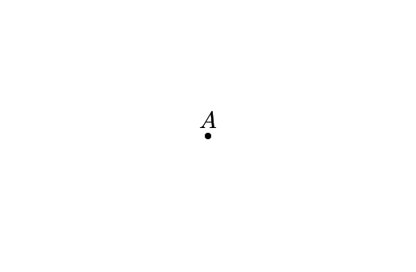

§10 · Рецепты
Короткие «как добиться X». Каждый — минимальный код без лишних обвесок. Большинство рецептов комбинируются между собой.
Унификация оформления
Все подписи одного цвета и размера
ImportPolicy(font_size_px=14, label_color='#222222')Все точки одного размера
ImportPolicy(size_px=3)Только три категории толщин
ImportPolicy(stroke_width_px='quantize:[0.75, 1.5, 3]')Скрыть все подписи
{
"overlay": {
"per_type": {
"point": {"label_visible": false},
"segment": {"label_visible": false},
"angle": {"label_visible": false}
}
}
}Замена палитры одной конструкции
Через style/*.json:
"import": {
"colors": {
"#1565c0": "color.main",
"#1565c0 0.1": "color.light 1",
"#d32f2f": "color.accent"
}
}Результирующий fill/stroke всегда остаётся hex
#rrggbb. Opacity меняется только если она явно указана справа
(например "color.light 1"); иначе текущая прозрачность элемента
сохраняется.
Через ImportPolicy:
ImportPolicy(stroke="remap:{'#1565c0':'#0066cc'}")Визуальные эффекты
Подпись точки в заданной стороне
A = Point(0, 0)
style(A, label_visible=True)
A.style.label_anchor = 'BC'
A.style.label_offset_px = [0, 10]
Двойная / тройная дуга равных углов
alpha.style['tick_count'] = 2 # двойная
beta.style['tick_count'] = 2 # тоже двойная → равныеWave-штрихи на сегментах
a.style['tick_count'] = 2
a.style['tick_style'] = 'wave'
a.style['lines_radius'] = 1.5Полигон поверх всего
Глобально для всех полигонов:
"rendering": { "polygon_boundary_layer": "top" }Для одного полигона:
p.style['z_index'] = 100Затенение (Shade/Restore) для «фокуса»
self.playShade(['A', 'B', 'C']) # вся геометрия серая
self.playRestore(['A', 'B', 'C']) # вернутьПунктирная окружность
c.style['stroke_dash_ratio'] = 0.5Диаграмма «буквы»: только подписи, без точек
"rendering": { "points_display": "only_labels" }Точка как «кольцо» вместо сплошной
A.style['fill'] = '#ffffff'
A.style['stroke'] = '#000000'
A.style['stroke_width_px'] = 1.4Кривые
Парабола / эллипс / гипербола одной строкой
p = Conic("y = x^2 - 2") # PARABOLA
e = Conic("(x+1)^2/4 + y^2/2 = 1") # ELLIPSE
h = Conic("x^2/2 - y^2 = 1") # HYPERBOLAЯвная функция и сугар
f = Function("y = sin(x) / x")
# Эквивалент — DSL-сугар:
f(x) = sin(x) / xОграничить область определения
# Через If[...] (работает в DSL):
f(x) = If[-2 <= x <= 2, x^2 - 1]
# Через Python API (domain= kwarg):
from animageo.geo.lib_function import Function
f = Function('x**2 - 1', domain=(-2, 2))Точка на функции / конике / неявной кривой
# Intersect диспатчится по парам типов — §3
line = Line(Point(-3, 0), Point(3, 1))
P = Intersect(f, line) # Function ∩ Line
Q = Intersect(parabola, line) # Conic ∩ LineНеявная кривая (лемниската, фолиум, …)
L = ImplicitCurve("(x^2 + y^2)^2 = 4 * (x^2 - y^2)")
L.style['stroke'] = '#4d87c6'
L.style['stroke_width_px'] = 2.2Экспорт и качество
Pixel-perfect 2× retina
scene.loadGGB('x.ggb', style_file='style/default.json', px_size=[1600, 1200])Или через флаг в стиле:
"rendering": { "scale_export": 2 }Высокое качество MP4
$ manim -qh scene.py MyScene # 1920×1080, 60 fps
# px_size задавайте пропорционально:
self.loadGGB('x.ggb', style_file='...', px_size=[1920, 1080])SVG без запуска manim
scene = MyScene()
scene.construct() # строит сцену и вызывает exportSVG внутри
# Запускается обычным python3, не manimSummary для AI style-generation
scene.loadGGB('problem.ggb', style_file='base.json', px_size=[800, 600])
summary = scene.exportStylePromptSummary('problem.summary.json')
# Если файл не нужен:
summary = scene.exportStylePromptSummary(include_resolved_style=True)Формат animageo-construction-summary/v1 хранит имена,
типы, компактную геометрию, видимость, ggb_style и diagnostics
без сырого XML. Подробно — docs/construction_summary.md.
Одна и та же сцена в разных стилях
for style in ['default', 'book_blue', 'book_red', 'pandora']:
scene = MyScene()
scene.applyStyle(style_file=f'style/{style}.json', px_size=[820, 520])
scene.exportSVG(f'{style}.svg')Хитрости
Горячая замена палитры без re-parse
scene.reloadPolicy(ImportPolicy(stroke="remap:{'#1565c0':'#0066cc'}"))Не перечитывает .ggb XML — использует кеш elem.ggb_raw.
Per-name override в стиле
"overlay": {
"per_name": {
"A": { "size_px": 10, "label_color": "#e74c3c" },
"B": { "size_px": 10, "label_color": "#e74c3c" }
}
}Разное оформление для разных типов
"overlay": {
"per_type": {
"polygon": {"fill_opacity": 0.1},
"point": {"size_px": 7}
}
}Сложные TeX-подписи
M.style['label_text'] = r'$\frac{a + b}{2}$'
N.style['label_text'] = r'$\sqrt{x^2 + y^2}$'
O.style['label_text'] = r'$\angle 60^{\circ}$'Можно и Unicode — замены автоматические (§6).
Блокировка подписи от автораскладки
A.style['label_placement_locked'] = True
A.style['label_offset_px'] = [10, -5]
# autoPlaceLabels обойдёт A сторонойАвтораскладка с кастомными весами
"rendering": {
"label_placement": {
"enabled": true,
"distance_px": 10, // дальше от геометрии
"w_label": 20, // сильнее штраф за перекрытие подписей
"w_geom": 5 // слабее штраф за пересечение геометрии
}
}Просто построить и сохранить один кадр
# Без автораскладки, без политик — самый короткий hello world
from animageo.animageo import AnimaGeoScene
class S(AnimaGeoScene):
def construct(self):
self.applyStyle(style_file='style.json', px_size=[800, 600])
self.putCode('A=Point(-2,0); B=Point(2,0); C=Point(0,2); p,a,b,c=Polygon(A,B,C)')
self.addAllGeometry(show=True)
self.updateAllGeometry()
self.exportSVG('tri.svg')
S().construct()Подводные камни
dynamic_angles=true сам ничего не делает.
Нужен либо keyframe_snapshots=true, либо
autoPlaceLabels(dynamic=True).
canonicalize_anchor=true ломает snapshot-тесты.
Они записали BL/BC/…. По умолчанию false;
включайте только для плавной анимации.
arc_size_px — основной радиус дуги.
Для расстояния между кратными дугами используйте arc_shift_px;
для числа дуг / меток равенства — tick_count.
np.isclose(angle, π/2).
Может ложно срабатывать в районе 89.5–91°. Задавайте явно, если важна
точность: elem.style['right_angle_marker'] = True.
elem.ggb_raw пусто у элементов из Python-DSL.
ImportPolicy.resolve_overrides_only() получит raw=None — политика
применится только через литералы и callables.
stroke_dash_ratio и fill работают у кривых лишь частично.
Только Conic(CIRCLE|ELLIPSE) читает fill/fill_opacity;
stroke_dash_ratio — только у CIRCLE. Parabola, Hyperbola,
Function и ImplicitCurve рисуются как polyline-VMobject и эти ключи
игнорируют. См. §7.
compute_label_layout видит только точки/сегменты/окружности/углы;
Conic/Function/ImplicitCurve — невидимые
препятствия. Подпись точки может оказаться «на» кривой. Решение — ручной
label_offset_px + label_placement_locked=True.
docs/gotchas.md.
Troubleshooting стилей
Самый быстрый способ понять, откуда берётся значение — трассировать resolver-цепочку:
from animageo.style.resolver import trace
source, value = trace(scene, A, 'size_px')
print(f'size_px = {value} from {source}') # напр. 'overlay.per_name'«Поставил overlay.per_type, но ничего не изменилось»
Overlay читается resolver'ом лениво. Если меняете
scene.style_config.overlay после загрузки — перерисуйте через
updateAllGeometry() или пересоздайте сцену.
«ImportPolicy не работает для DSL-элементов»
ImportPolicy — GGB-only: он читает elem.ggb_raw, которого у
DSL-элементов нет. Для DSL используйте overlay или прямые записи в
elem.style.
«Моё значение elem.style игнорируется»
trace() покажет источник. Если он overlay.per_name
или overlay.per_type — overlay перекрывает запись (overlay
применяется на этапе addAllGeometry, до пост-настройки). Уберите
ключ из overlay или пишите в elem.style уже после загрузки.
«Размер шрифта неправильный при смене px_size»
Используйте font_size_px (pixel-invariant), а не старый
font_size — runtime читает первый через resolver.
«Угол выглядит иначе после смены холста»
Дуги/штрихи углов в пикселях. Узкий угол при
angle_radius.enabled=false может «схлопнуться» на маленьком холсте —
включите angle_radius.enabled=true с разумным min_px
(см. §5 · overlay.angle_radius).
«Удалил ключ из elem.style — ничего не поменялось»
del A.style['size_px'] убирает явную запись, но overlay/defaults
всё ещё дают значение. trace() покажет, откуда оно теперь.